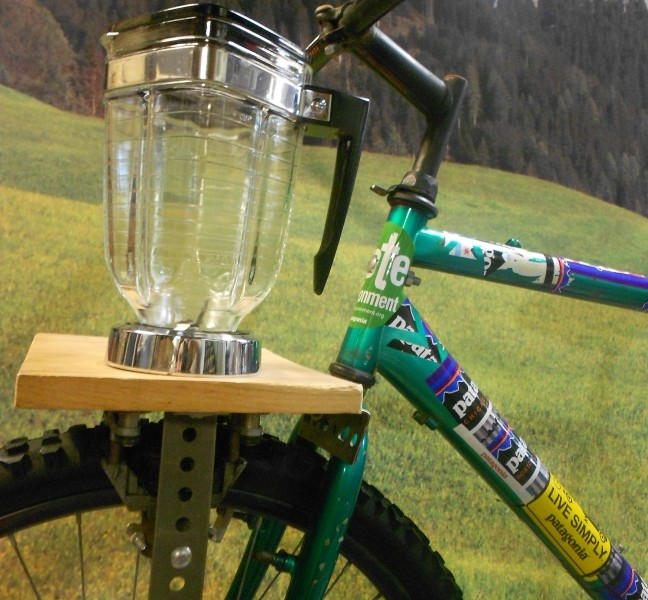

April 14, 2016
Your Power Workout

In our modern society we have little physical labor built into our daily routines. Instead of being out plowing the fields, we now normally head to the gym to get fit. But if we are trying to lead a life that is easy on the environment, driving our car to a gym where we run on a treadmill is not a great option. An average treadmill gives off 2 pounds of CO2 during a 30-minute workout. Here are some ideas for change, from aspirational to super easy:
Generate electricity – Use that old bike in the garage to send power to the grid, your own battery pack or even a blender for your post-workout smoothie! There are lots of DIY kits available to rig up your own system or check out Fender Blender.
Make your own transportation – Get your workout while running errands; walk to the grocery store or bike to work.
Get outdoors – A hike, run, bike or other outdoor activity will require zero electricity. Even just 5 minutes can improve mental health, lower blood pressure and in the wintertime help fend off Seasonal Affective Disorder.
Stay home – Dust off those Jane Fonda videos and get your workout at home. You won’t need any gear for old-fashioned push-ups, sit-ups or jumping jacks.
Get green gear – There are lots of options for eco-friendly clothes made from organic cotton or recycled materials. Shop Craigslist for used equipment. The best option is probably that pile of old T-shirts you already have in the back of your closet.
Carpool – Joining up with friends or neighbors to go to the gym is good for both the environment and your motivation to stick with your exercise regime. You can also look for a gym that is within walking distance to work, school or home to save on commute time.
Inspire your gym – Limit your use of towels. Power down TVs and treadmills when not in use and encourage gym to have them do so automatically. Bring a reusable water bottle. Make sure there are recycling stations. Or ask about harnessing all that human power and generating their own electricity. One Portland gym is doing just that.